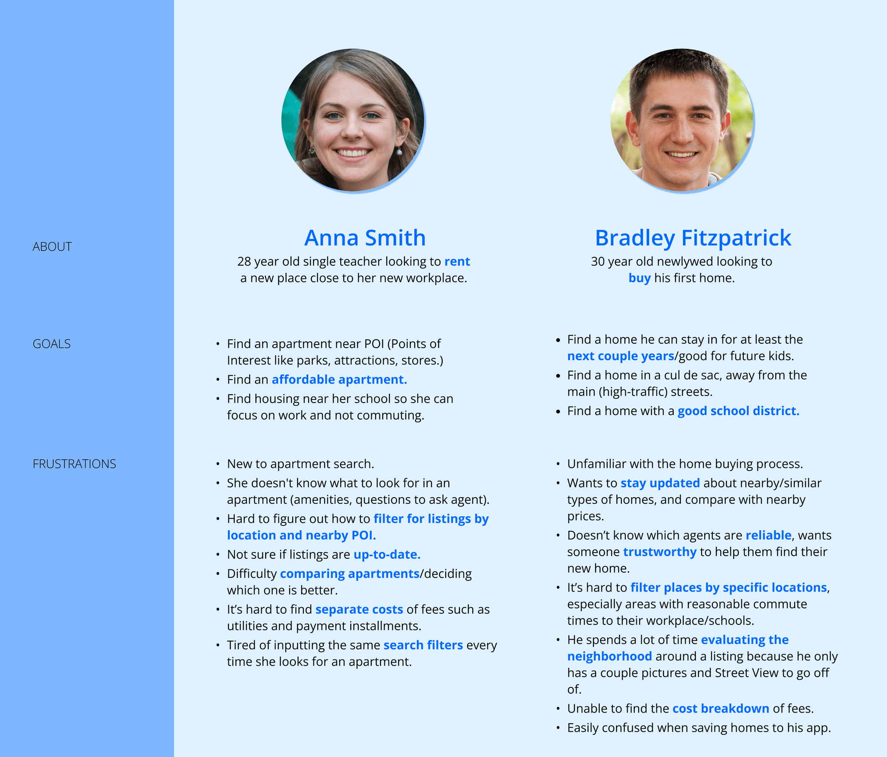
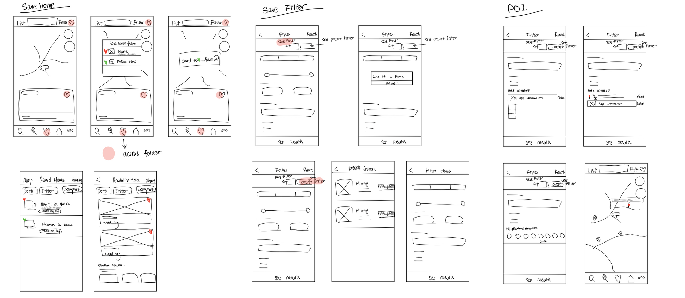
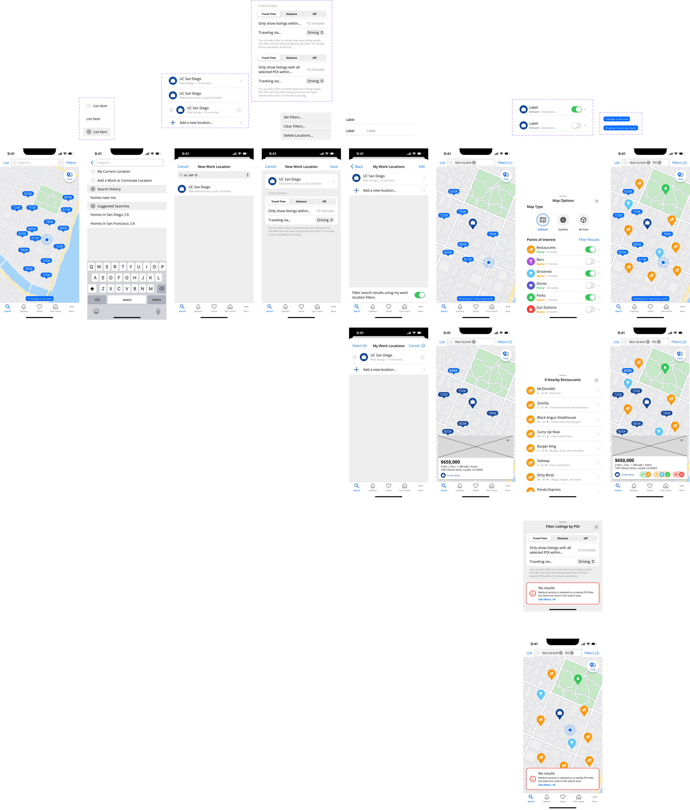
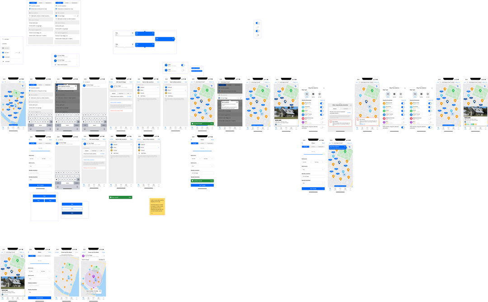

UX/Product Design
January 2023 - March 2023
It's no secret that the house-hunting process comes with stress. More than half of home-buyers were left in tears while searching for a place to live. Many potential homeowners have expressed their concerns for the rising cost of housing as monthly rent costs have reached an average high of $2,031 in the United States. Not only does the rising costs affect the emotionally taxing process of house hunting, the lack of communication from agents and the competition of the market have added to the stress of the process. With these issues, renters have also faced a lack of housing in their budget and preferences as 50-60% of renters were stressed about finding housing in their neighborhood of choice as well as within their budget. Both renters and homeowners are in search of an easier way to find housing that meets their requirements while remaining stress-free. Additionally, the younger generations—Gen Z and Millennials—were “far more likely to cry at least once during their home-buying journey.” Inspired by the difficulties faced by millions of house-hunters, we’ve decided to undertake a project to see if the housing process can be made less emotionally-taxing and more efficient by extending or redesigning features of popular real-estate marketplace websites and applications such as Apartments.com, Realtor.com, and Zillow.
For the project, our objective was to conduct user research by targeting two primary stakeholder groups: renters and home-buyers. We had decided to exclude sellers or listers as additional stakeholders since the process of listing and selling properties had vastly different flows with different user backgrounds, problems, goals, frustrations, and financial situations. Our project scope focused on the home-hunting process, which was separate from the listing, selling, and market analysis user flows. As a result, we did not consider sellers or listers as our target user groups.
Our user research aimed to understand how real estate apps were used and what issues users faced. We found common themes like location, transportation, environment, cost, policies, and amenities. We explored these issues through user testing to make the search more accessible, user-friendly, and efficient.
For our research method, we chose to utilize data analysis, online research, and user testing interviews.
We started by analyzing data and conducting online research to identify problems users had with housing applications. We used this information to narrow down our stakeholder groups and app selection for user testing interviews. During the interviews, we asked participants about their experiences and priorities when evaluating a listing, and conducted user testing to observe their behavior and gain deeper insights into their thought process. We used this information to develop a problem statement to guide our design direction. This research method allowed us to observe participants in an environment close to their context of use, and gain a better understanding of their user needs, insights, goals, and frustrations.
We conducted online interviews with 9 participants, 5 renters and 4 buyers, who were looking to rent or buy a new home, matching our target user population. The interviews were conducted via Zoom, allowing us to record the process and gather verbal and visual data. The participants were between 21-24 years old and predominantly located within the San Diego area, and were familiar with the Zillow application. We chose to conduct the interviews online as the housing search process is commonly done at home and it allowed us to gather data in the primary context of use for the application.
From our interviews with renters, we found core problems that were common for most users:
1. Listing information and availability on Zillow is outdated.
For example, the property owners don’t update the information manually when new tenants move in and out. Instead, they just put generic information on the listing (e.g. the price of a unit is at least X.) This forces renters to double-check with external sites or manually contact the seller for the latest information. Users also mentioned that there is missing information for the listing, such as utility fees or other fees.
2. Users find it difficult to compare multiple listings at the same time.
They have to memorize and recall listing information when comparing multiple listings, requiring increased cognitive load. There is a Compare feature offered by Zillow that allows users to view differences in listing details, but it is not available for renters.
3. Renters need a more efficient way to filter for listings by location.Users found it difficult to conduct accurate searches based on their desired location since the listings were presented in random order rather than based on distance from the center of the searched location. Some users expressed desires for more specific location filters, such as areas with a maximum commute time to a workplace.
1. Home-buyers need an easy way to evaluate the neighborhood and environment surrounding a home.
When looking at listings, most of our users attempted to evaluate the surroundings of a home using Google Street View or Apple Look Around, since the listing images were insufficient. However, many of them were unable to find the Street View option within the listings. After further search, users found that the street view option was hidden within the images of the listing, making it difficult to discover at first glance. Even after they find Street View, they spend a lot of time navigating around the property and surrounding neighborhood, examining various aspects of the environment from different angles and positions. This takes up time and energy that could be spent on browsing more listings.
2. Home-buyers need a way to compare listing prices with market prices and recent sales nearby.
Some users also want an easy way to stay updated with price changes and similar/nearby homes.
1. Users need a way to filter for listings that have nearby points of interest.
Currently, users can check travel times between a home and a specified location, but there is no easy way to compare or filter this information across multiple listings in their search process. Home-hunters need to compare locations and travel times for points of interest like grocery stores, restaurants, hospitals, and schools.
2. There is a lack of information about the agent on the listing page.
The users felt uncertain whether or not the listing information was accurate, reliable, and trustworthy. They have to communicate with the agent or meet them in-person to evaluate their credibility and willingness to cooperate.
3. Home-hunters need more information about the cost breakdown on the listing page.
The users lacked information about separate costs that were not included in the listing price. This may include possible fees like utilities, insurance costs, payment installments, and property taxes.
4. Renters and home-buyers had trouble finding, understanding, using, and/or differentiating the “Saved Homes” and “Save Search” features.
Most of the users had very different expectations about the “Save Search” feature—some thinking that it saved the search results or individual homes rather than keeping the user notified about new homes related to their search. Several users could not find the feature at all. The users wish that there was a straightforward way to save their search criteria as presets, use them when generating similar home recommendations, and stay up-to-date on price changes in the search results.
Home-hunters need a streamlined way to browse, filter, and compare up-to-date and complete listing information in order to make informed decisions about their future living situation when searching for properties, helping them find the perfect home for their families.
In order to gain a deeper understanding of the problem and explore potential solutions, we employed the strategy of developing fictional personas. Our aim was to identify the user needs and pain points associated with the problem.
We initiated the design process with low-fidelity digital sketches. This enabled us to generate ideas promptly and discuss, as a team, the features that we considered to be most crucial to redesign, before finalizing them. The core pain points we had discovered previously were integral to deciding which features we finalized on, those being: Save Homes, Save Filters, and Points of Interest (POI).
Following a design critique session, it was concluded that merging both sketch options for each feature would be the optimal approach. The lo-fi wireframes were then used for our user testing.
To gauge the effectiveness of the revamped features in enhancing user experience during housing searches, we conducted a series of user testing sessions. The tests involved four participants, consisting of three renters and one home-buyer, who were relevant to our research due to their interest in finding a new home, similar to our target user demographic.
Each participant was instructed to first use the Zillow app, followed by the redesigned prototype. For both applications, they were given three task scenarios, corresponding to each of the three interaction flows that were prototyped. During the tasks, participants were requested to verbalize their thought process, answer follow-up questions, and share feedback. At the end of the session, they provided a comparison of the original app and the redesign as a measure of the redesigned features' impact on their housing search experience.
After conducting user testing on the commute and nearby POI interfaces with potential renters and homebuyers, we gained several valuable insights.
Users were generally receptive to the new features, particularly appreciating the ability to search for homes near specific locations and the helpfulness of travel time information. Additionally, users found the Nearby POI interface easier to use and appreciated the ability to view multiple POI types at once directly within the housing app.
However, users suggested some areas of improvement. For example, they desired a more efficient way to search for nearby locations in the commute flow and a clearer way to access and use the POI filtering feature.
Feedback received for our "Save Homes" design was mixed, providing valuable insights for improving user-centered design.
Positive feedback included users enjoying the instant feedback when saving a home, appreciating the folder feature for organization, finding notifications helpful for staying updated on listing changes, and finding feature tags useful as reminders.
However, users also suggested several areas for improvement, such as increasing the clickable area for dropdown list options, making the top bar icon larger and further, removing redundant buttons, making the notification bell icon larger and more informative, and providing more details about the nature of notifications.
Users generally found the revamped save filters feature useful and time-saving due to accessible pre-made filters and preset names, with some appreciating the ability to create multiple filters.
Some users desired notifications to find comparable homes, and overall, users expressed positive feedback towards the update.
However, improvements can be made, such as making it easier to return to the list of filter presets, providing clarification and consistency for the notification bell button, making the view on map button more visible, differentiating the feature from the save homes feature, and removing unnecessary images accompanying filter presets.
The final design of the Zillow app was created based on feedback from user testing. After receiving a variety of observations from potential homebuyers and renters, the design team was able to identify areas for improvement and create actionable tasks for the forthcoming design cycle. Users found the revamped Save Filters feature to be a significant time-saver, with pre-made filters being easily accessible and identifiable by preset names. Some users appreciated the ability to create multiple filters, while others desired more information about what they will be notified about. The design team also received feedback on areas for improvement, such as the need for greater consistency regarding the notification bell button's functions and more conspicuous access to the view on map button. Despite these observations, users expressed that the feature was a favorable update to Zillow's Save Filters feature. By utilizing insights from user testing, the design team was able to create a final design that meets users' needs and expectations.
